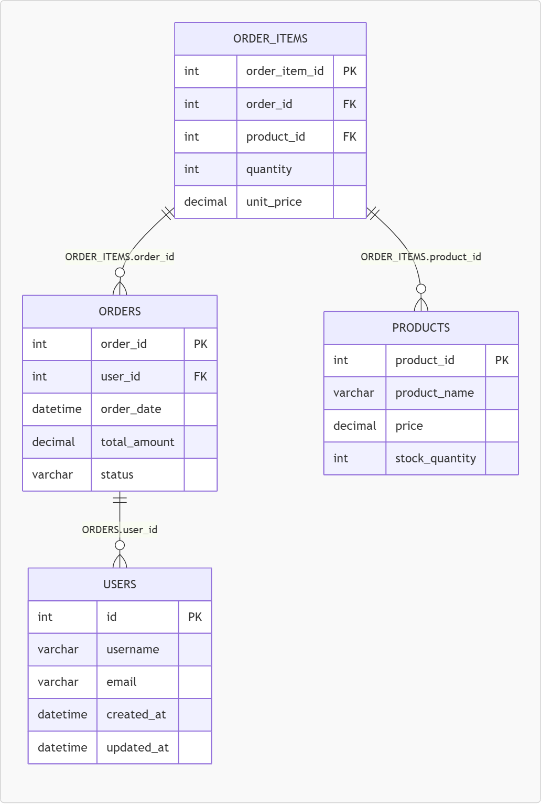

ER図を作成する方法はいくつかありますが、
最近はMermaidを使ってコードで管理する方法が人気です。
この記事では、MermaidのerDiagramを使ってER図を作成する方法を解説します。
Mermaidは、テキストから図を生成できるツールです。
コード → 図
のように、シンプルに構造を可視化できます。
erDiagram
// ユーザーテーブル定義
USERS {
int id PK
varchar places
}
// 注文テーブル定義
ORDERS {
int order_id PK
varchar places FK
}
// 関係性定義
USERS ||--o{ ORDERS : places
|| → 1（必ず1つ）
o{ → 多（0以上）
👉 つまり
1対多（1:N）
を表します。
erDiagram
USERS {
int id PK
varchar username
varchar email
datetime created_at
datetime updated_at
}
ORDERS {
int order_id PK
int user_id FK
datetime order_date
decimal total_amount
varchar status
}
PRODUCTS {
int product_id PK
varchar product_name
decimal price
int stock_quantity
}
ORDER_ITEMS {
int order_item_id PK
int order_id FK
int product_id FK
int quantity
decimal unit_price
}
ORDERS ||--o{ USERS : "ORDERS.user_id"
ORDER_ITEMS ||--o{ ORDERS : "ORDER_ITEMS.order_id"
ORDER_ITEMS ||--o{ PRODUCTS : "ORDER_ITEMS.product_id"
このコードで以下のようなER図が生成されます。

Gitで変更履歴を管理できる
GUIツールと違って
👉 コードを書き換えるだけ
手書きでも良いですが、
SQLから自動生成するとさらに効率的です。
-- テーブル1: users
CREATE TABLE users (
id INT PRIMARY KEY AUTO_INCREMENT,
username VARCHAR(100) NOT NULL,
email VARCHAR(255) NOT NULL UNIQUE,
created_at DATETIME DEFAULT CURRENT_TIMESTAMP,
updated_at DATETIME DEFAULT CURRENT_TIMESTAMP ON UPDATE CURRENT_TIMESTAMP
);
-- テーブル2: orders
CREATE TABLE orders (
order_id INT NOT NULL,
tenant_id INT NOT NULL,
user_id INT NOT NULL,
order_date DATETIME DEFAULT CURRENT_TIMESTAMP,
total_amount DECIMAL(10, 2) NOT NULL,
status VARCHAR(50) DEFAULT 'pending',
PRIMARY KEY (order_id, tenant_id),
FOREIGN KEY (user_id) REFERENCES users(id),
);
👉 Mermaid形式に変換すると
erDiagram
USERS ||--o{ ORDERS : has
SELECT * FROM users u JOIN orders o ON u.id = o.user_id;
👉 Mermaid形式に変換すると
erDiagram
USERS ||--o{ ORDERS : has
👉 この変換は手動でも可能ですが、ツールを使うと一瞬で生成できます。
👉 SQL2ERはこちら
※ こちらのツールは生成後にMermaid形式（.mmd）ファイルをダウンロードできます。
👉 SQL2ERでER図を自動生成してみる
※ 生成後にMermaid形式（.mmd）ファイルをダウンロードできます。
-ENGLISH.gif)